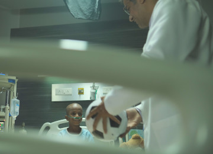
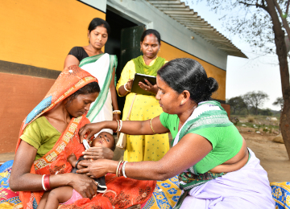
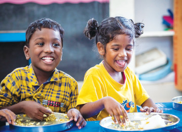
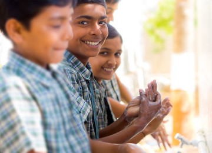
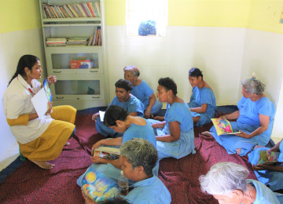

|
|  | Cancer CareSince it established the Tata Memorial Centre in 1941, the Tata group has been leading the fight against cancer in India, ensuring every patient has access to affordable, quality cancer care, through its centres, and even the National Cancer Grid, → |
|  | Maternal & neonatal healthSince it established the Tata Memorial Centre in 1941, the Tata group has been leading the fight against cancer in India, ensuring every patient has access to affordable, quality cancer care, through its centres, and even the National Cancer Grid, which uses technology to establish standards in the prevention, diagnosis and treatment of the disease. → |
|  | Nutrition & food fortificationSince it established the Tata Memorial Centre in 1941, the Tata group has been leading the fight against cancer in India, ensuring every patient has access to affordable, quality cancer care, through its centres, and even the National Cancer Grid, which uses technology to establish standards in the prevention, diagnosis and treatment of the disease. → |
|  | Water, sanitation & hygieneSince it established the Tata Memorial Centre in 1941, the Tata group has been leading the fight against cancer in India, ensuring every patient has access to affordable, quality cancer care, through its centres, and even the National Cancer Grid, which uses technology to establish standards in the prevention, diagnosis and treatment of the disease. → |
|  | Mental & HealthcareSince it established the Tata Memorial Centre in 1941, the Tata group has been leading the fight against cancer in India, ensuring every patient has access to affordable, quality cancer care, through its centres, and even the National Cancer Grid, which uses technology to establish standards in the prevention, diagnosis and treatment of the disease. → |
|
|||||||||
Buisness |
Community |
Newsroom |
| @2024 Kunal Soni Private Limited Rights Reserved |